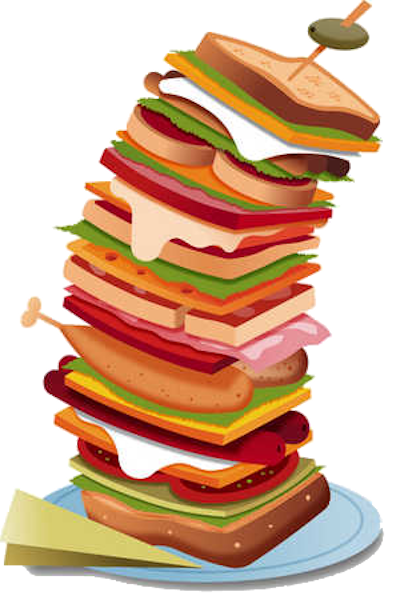

Sandwiches
Full Stack Sandwich
With an array of ingredients, it's got everything you want. C# Drumsticks, HTML-dogs, JavaScript Tomatoes, CSS Cheese, and Machine Learning Mayo.
Served with a side of SQL
Universal Serial Burger

For years, food connectivity relied on plethora of incompatible plates and tastes. Now we have the Universal Serial Burger!
Upgrade to USBurger 3.0 for just $5